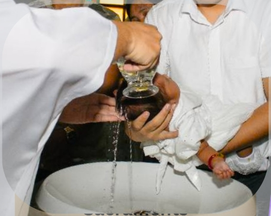
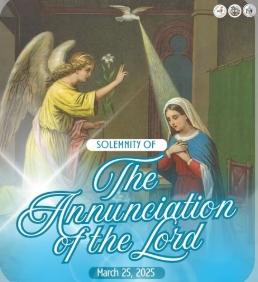
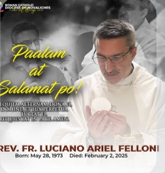

SANTA KRUS PARISH
DIOCESE OF NOVALICHES

Services

Sacrament
Claiming
Live Mass
News and Announcement

FEAST OF THE DAY
The Solemnity of the Annunciation...

ANNOUNCEMENT
Please bring your old palm...

DIOCESE
In Loving Memory of Rev. Fr. Lucia...